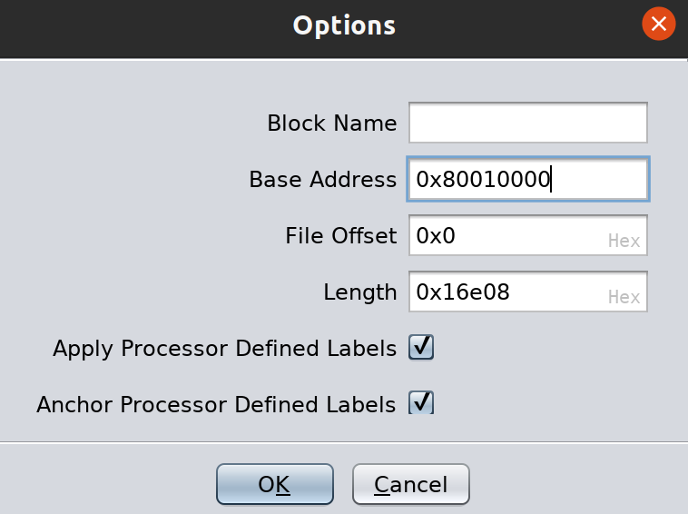
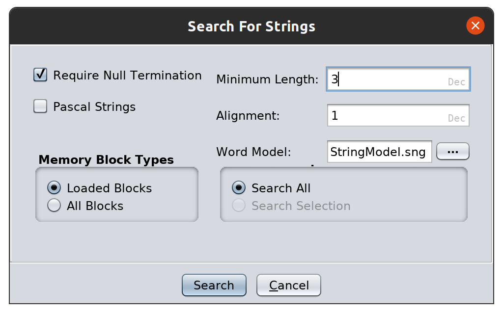
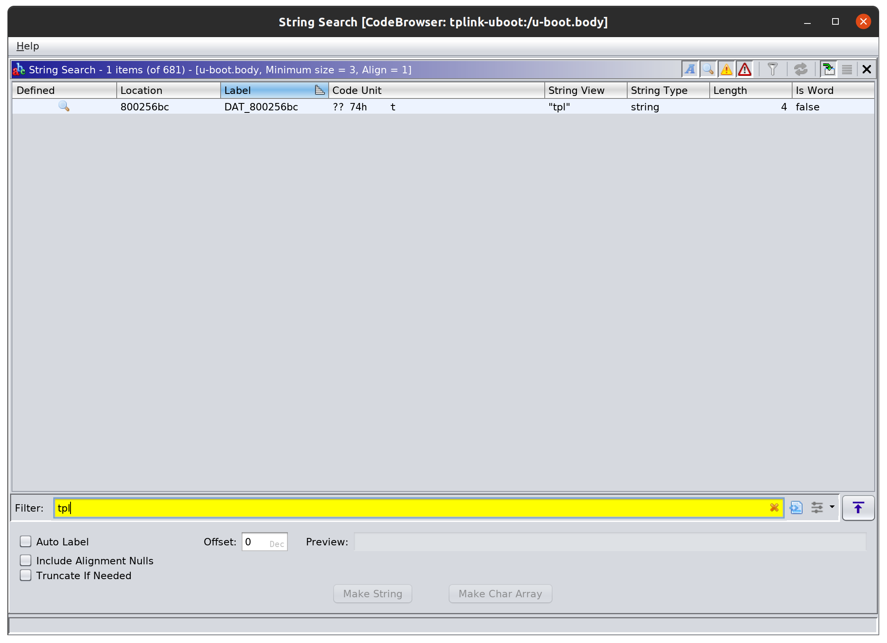
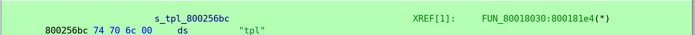
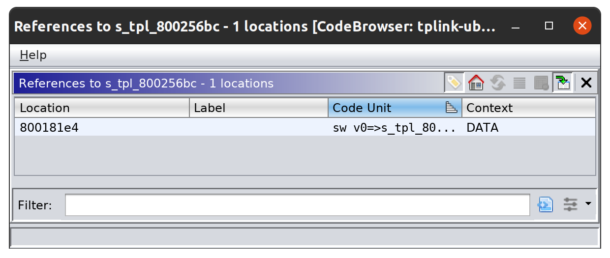
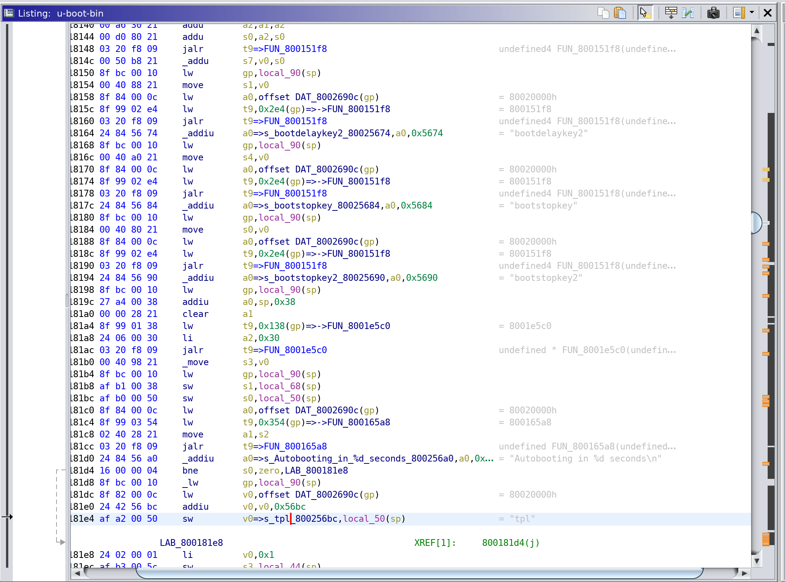

Published: December 1, 2020
I recently saw a tweet that struck my curiosity. The background on this is that the TP-Link WA701Nv2 Series WiFi Access Point / Router uses Das U-Boot as a bootloader and also has an "escape sequence" that breaks into the U-Boot shell during the boot cycle. According to the tweet, that "escape sequence" is the string tpl, entered in right after the Autobooting in ... prompt. See the tweet for a photo. Read the whole thread here
As part of the twitter thread, the original researcher and author @SecurityJon published a link to the firmware for the router he was looking at - https://static.tp-link.com/resources/software/TL-WA701ND_V2_130528.zip in his tweet here. Warning: I had to navigate through TP-Link's support pages to actually download the firmware, the direct link showed me a screen that said:
Please go to TP-Link Offical Website to get products, software and services for your region.
The firmware is the third version from the top at this webpage: https://www.tp-link.com/us/support/download/tl-wa701nd/#Firmware
Once I downloaded the firmware image, I unziped TL-WA701ND_V2_130528.zip which contains wa701nv2_en_3_16_6_up_boot(130528).bin.
Running binwalk on the extracted .bin file resulted in this output:
$ binwalk wa701nv2_en_3_16_6_up_boot\(130528\).bin
DECIMAL HEXADECIMAL DESCRIPTION
--------------------------------------------------------------------------------
0 0x0 TP-Link firmware header, firmware version: 0.-17687.3, image version: "", product ID: 0x0, product version: 117506050, kernel load address: 0x0, kernel entry point: 0x80002000, kernel offset: 4063744, kernel length: 512, rootfs offset: 891601, rootfs length: 1048576, bootloader offset: 2883584, bootloader length: 0
14160 0x3750 U-Boot version string, "U-Boot 1.1.4 (May 28 2013 - 11:35:30)"
14208 0x3780 CRC32 polynomial table, big endian
15504 0x3C90 uImage header, header size: 64 bytes, header CRC: 0xFCDBAA10, created: 2013-05-28 03:35:31, image size: 32793 bytes, Data Address: 0x80010000, Entry Point: 0x80010000, data CRC: 0xB9564E5B, OS: Linux, CPU: MIPS, image type: Firmware Image, compression type: lzma, image name: "u-boot image"
15568 0x3CD0 LZMA compressed data, properties: 0x5D, dictionary size: 33554432 bytes, uncompressed size: 93704 bytes
131584 0x20200 TP-Link firmware header, firmware version: 0.0.3, image version: "", product ID: 0x0, product version: 117506050, kernel load address: 0x0, kernel entry point: 0x80002000, kernel offset: 3932160, kernel length: 512, rootfs offset: 891601, rootfs length: 1048576, bootloader offset: 2883584, bootloader length: 0
132096 0x20400 LZMA compressed data, properties: 0x5D, dictionary size: 33554432 bytes, uncompressed size: 2580580 bytes
1180160 0x120200 Squashfs filesystem, little endian, version 4.0, compression:lzma, size: 2649889 bytes, 585 inodes, blocksize: 131072 bytes, created: 2013-05-28 03:45:22
Really the only thing I was interested in is this line:
15504 0x3C90 uImage header, header size: 64 bytes, header CRC: 0xFCDBAA10, created: 2013-05-28 03:35:31, image size: 32793 bytes, Data Address: 0x80010000, Entry Point: 0x80010000, data CRC: 0xB9564E5B, OS: Linux, CPU: MIPS, image type: Firmware Image, compression type: lzma, image name: "u-boot image"
Usually in these SoHo routers the bootloader is contained within the firmware image, and this instance was no different. I ran the following dd command to carve out the bootloader:
$ dd if=wa701nv2_en_3_16_6_up_boot\(130528\).bin of=u-boot.bin bs=1 skip=15504 count=$((131584 - 15504))
If you are wondering where I got 131584 from, its the next location in the binwalk output of anything meaningful. Even if we carve out extra data, it won't matter.
So now I run binwalk on u-boot.bin and we see basically the same result:
DECIMAL HEXADECIMAL DESCRIPTION
--------------------------------------------------------------------------------
0 0x0 uImage header, header size: 64 bytes, header CRC: 0xFCDBAA10, created: 2013-05-28 03:35:31, image size: 32793 bytes, Data Address: 0x80010000, Entry Point: 0x80010000, data CRC: 0xB9564E5B, OS: Linux, CPU: MIPS, image type: Firmware Image, compression type: lzma, image name: "u-boot image"
64 0x40 LZMA compressed data, properties: 0x5D, dictionary size: 33554432 bytes, uncompressed size: 93704 bytes
This tells me that 64 bytes after the legacy U-Boot header (normally called a uImage) is a lzma-compressed blob. So lets carve out that compressed blob:
$ dd if=u-boot.bin of=u-boot.body.lzma bs=64 skip=1
Next we use 7z to extract the lzma-compressed data:
$ 7z x u-boot.body.lzma
7-Zip [64] 16.02 : Copyright (c) 1999-2016 Igor Pavlov : 2016-05-21
p7zip Version 16.02 (locale=C.UTF-8,Utf16=on,HugeFiles=on,64 bits,8 CPUs Intel(R) Xeon(R) CPU E5-2660 v2 @ 2.20GHz (306E4),ASM,AES-NI)
Scanning the drive for archives:
1 file, 116016 bytes (114 KiB)
Extracting archive: u-boot.body.lzma
--
Path = u-boot.body.lzma
Type = lzma
ERROR: There are some data after the end of the payload data : u-boot.body
Sub items Errors: 1
Archives with Errors: 1
Sub items Errors: 1
The error ERROR: There are some data after the end of the payload data : u-boot.body simply means we carved out too much data when using dd to create u-boot.bin. It does not prevent us from proceeding though. At this point we should have a file named u-boot.body.
This is the point where we need to fire up Ghidra.
Create a new Ghidra Project and import u-boot.body. This will not be recognized as any specific type of binary, so the binary format option will be set to Raw Binary. This is because legacy U-Boot images allowed arbitrary executable data after the header.
Next set the language to MIPS Big Endian Default:
After that you will need to set the load address. We know this value from the binwalk output, which parses the U-Boot header for the information. The correct value here is 0x80010000 - search the binwalk output above for this value if you are confused as to where it came from.

The next thing I did was search for strings. I had to set the length down to 3 in order to catch the string tpl:

After that I filtered for tpl:

Double clicking on the string search result takes me to the location in the disassembler that the string search found the string at. This is address 0x800256bc. We can apply the data type string to the tpl characters by select the four bytes at this address, right clicking on the green selection, and navigating to Data->string. Afterwards, your selection should look like this:

Next we right click on s_tpl_800256bc and select References->Show References to s_tpl_800256bc at the bottom of the context-menu. You should see a screen like this:

There should only be one reference, so I double clicked on it and was greeted with the following disassembly:

And with that we have found the location in Ghidra where the "escape sequence" code exists!